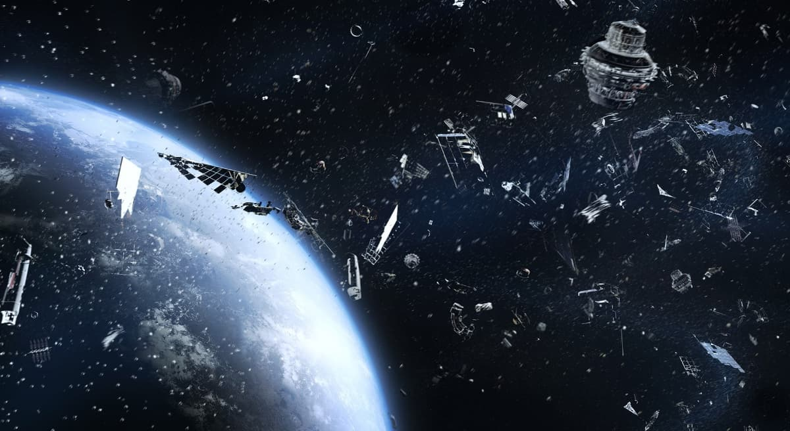
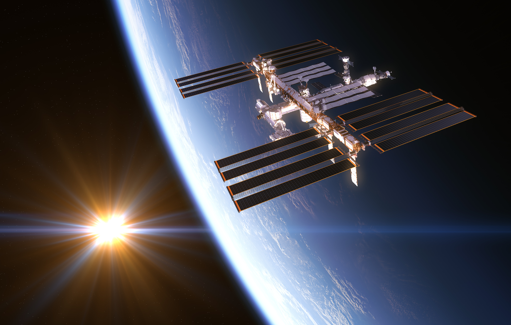
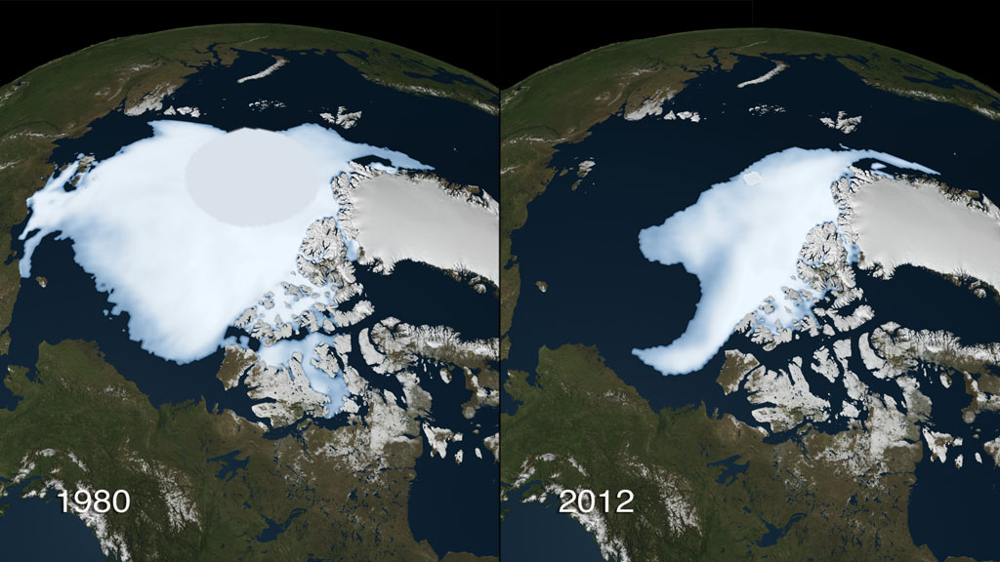

Nome Aleatório
Oct 28, 2024
RELEASE: 24-135
NASA Headquarters
Lixo Espacial
Impacto dos detritos espaciais na Terra e nas missões de monitoramento climático
O lixo espacial representa uma ameaça para satélites essenciais ao monitoramento ambiental e climático da Terra. Esses satélites coletam dados críticos sobre mudanças atmosféricas, qualidade do ar e desastres naturais, mas os detritos orbitais podem danificá-los.
Para mitigar esses riscos, a NASA investe em tecnologias de monitoramento de detritos e em projetos de remoção, assegurando a continuidade de operações que sustentam a proteção climática e ambiental.
Observação da Terra
Uso de satélites da NASA para monitoramento ambiental e mudanças climáticas
A NASA emprega satélites de última geração para monitorar o clima da Terra, incluindo temperaturas globais, níveis de gases do efeito estufa e padrões de desmatamento. Esses dados são fundamentais para a pesquisa sobre aquecimento global e previsões de eventos climáticos extremos.
As informações coletadas auxiliam cientistas e governos em ações preventivas e políticas ambientais que buscam mitigar o impacto das mudanças climáticas.
Impacto de Detritos e Asteroides no Clima
Como colisões e detritos espaciais podem influenciar o clima da Terra
Embora raro, o impacto de grandes asteroides ou a queda de detritos espaciais poderia desencadear mudanças climáticas súbitas, com efeitos devastadores para o ecossistema. Estudos da NASA analisam os possíveis cenários e desenvolvem planos de resposta a esses eventos.
Esse conhecimento é essencial para a preparação global, garantindo que a humanidade tenha respostas eficazes para proteger o clima e a biodiversidade da Terra em caso de impactos.